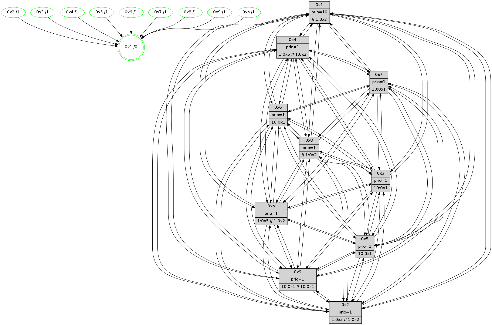

>> << IDX [start] -100 -25 -5 +0 +5 +25 +100 [675.068701982]
 Previous packets
----------------------------------------------------------------------
670.339919 beacon01(faad) #0 coord=01,02,03,04,05,06,07,0a,09,08 cycle=688.0ms assoc
-- color-indic=1 64 58 d2
670.349900 beacon02(faad) #0 coord=01,02,03,04,05,06,07,0a,09,08 cycle=688.0ms assoc 64 cb e3
670.359904 beacon03(faad) #0 coord=01,02,03,04,05,06,07,0a,09,08 cycle=688.0ms assoc 64 b1 ae
670.369903 beacon04(faad) #0 coord=01,02,03,04,05,06,07,0a,09,08 cycle=688.0ms assoc 64 c6 44
670.379902 beacon05(faad) #0 coord=01,02,03,04,05,06,07,0a,09,08 cycle=688.0ms assoc 64 bc 09
670.389902 beacon06(faad) #0 coord=01,02,03,04,05,06,07,0a,09,08 cycle=688.0ms assoc 64 32 de
670.399902 beacon07(faad) #0 coord=01,02,03,04,05,06,07,0a,09,08 cycle=688.0ms assoc 64 48 93
670.409906 beacon0a(faad) #0 coord=01,02,03,04,05,06,07,0a,09,08 cycle=688.0ms assoc 64 39 98
670.419909 beacon09(faad) #0 coord=01,02,03,04,05,06,07,0a,09,08 cycle=688.0ms assoc 64 b7 4f
670.429908 beacon08(faad) #0 coord=01,02,03,04,05,06,07,0a,09,08 cycle=688.0ms assoc 64 cd 02
670.442128 [Hello(7): seq=430 sym=2,3,5,6,8,9,10,1 sysInfo=hasWarning stat=2:12,3,10,9/3:15,10,5,8/5:14,6,5,10/6:4,3,3,2/8:2,12,6,4/9:0,0,6,8/10:4,3,8,7/1:11,6,2,1]
670.444775 [Hello(3): seq=430 sym=1,7,6,2,4,8,9,10,5 sysInfo= stat=1:11,8,4,1/7:7,10,1,3/6:15,3,13,7/2:10,0,1,7/4:10,5,1,4/8:2,15,14,2/9:5,8,5,6/10:9,6,0,5/5:4,14,1,6]
670.447356 [Hello(4): seq=430 sym=5,7,6,2,3,9,8,10,1 sysInfo= stat=5:1,7,1,6/7:14,12,3,2/6:7,2,4,7/2:7,8,14,6/3:14,2,11,4/9:1,15,0,3/8:7,3,2,7/10:7,5,3,6/1:4,8,2,1]
670.450291 [Color(10) seq=88 @0:0 prio=1 >1.@5 >>1.@2,1.@3,1.@4]
670.452471 [Color(8) seq=110 @0:0 prio=1 >>1.@2,1.@3,1.@4]
----------------------------------------------------------------------
671.128050 beacon01(faad) #0 coord=01,02,03,04,05,06,07,0a,09,08 cycle=688.0ms assoc
-- color-indic=1 64 e4 d7
671.138032 beacon02(faad) #0 coord=01,02,03,04,05,06,07,0a,09,08 cycle=688.0ms assoc 64 77 e6
671.148033 beacon03(faad) #0 coord=01,02,03,04,05,06,07,0a,09,08 cycle=688.0ms assoc 64 0d ab
671.158035 beacon04(faad) #0 coord=01,02,03,04,05,06,07,0a,09,08 cycle=688.0ms assoc 64 7a 41
671.168034 beacon05(faad) #0 coord=01,02,03,04,05,06,07,0a,09,08 cycle=688.0ms assoc 64 00 0c
671.178033 beacon06(faad) #0 coord=01,02,03,04,05,06,07,0a,09,08 cycle=688.0ms assoc 64 8e db
671.188033 beacon07(faad) #0 coord=01,02,03,04,05,06,07,0a,09,08 cycle=688.0ms assoc 64 f4 96
671.198037 beacon0a(faad) #0 coord=01,02,03,04,05,06,07,0a,09,08 cycle=688.0ms assoc 64 85 9d
671.208039 beacon09(faad) #0 coord=01,02,03,04,05,06,07,0a,09,08 cycle=688.0ms assoc 64 0b 4a
671.218039 beacon08(faad) #0 coord=01,02,03,04,05,06,07,0a,09,08 cycle=688.0ms assoc 64 71 07
671.229591 [Hello(10): seq=363 sym=6,2,3,8,9,5,7,4,1 sysInfo= stat=6:1,11,4,2/2:1,8,10,1/3:5,12,9,3/8:1,10,15,6/9:5,9,14,4/5:7,1,15,7/7:13,7,1,2/4:15,12,11,6/1:15,15,1,1]
671.232311 [Color(3) seq=95 @0:0 prio=1 >10.@1,1.@2,1.@5,1.@8]
671.234270 [Color(7) seq=83 @0:0 prio=1 >10.@1,1.@2,1.@3,1.@5]
671.239709 [Color(2) seq=76 @0:0 prio=1 >1.@5 >>1.@2,1.@3,1.@4]
671.242149 [Hello(8): seq=374 sym=5,2,3,4,7,6,9,10,1 sysInfo=hasWarning,coloring-mode-on,ColoringModeIndicationCalled stat=5:0,1,3,6/2:7,8,10,1/3:15,15,0,8/4:6,9,4,6/7:1,9,3,5/6:10,13,15,7/9:6,9,4,5/10:13,9,2,6/1:2,2,2,0]
671.246493 [Color(6) seq=100 @0:0 prio=1 >10.@1,1.@2,1.@3,1.@5]
671.249897 [Color(1) seq=111 @0:0 prio=10 >>1.@2,1.@3,1.@4]
671.251995 [Color(4) seq=74 @0:0 prio=1 >1.@5 >>1.@2,1.@3,1.@4]
671.255751 [Hello(5): seq=431 sym=7,6,4,3,1,9,8,10,2 sysInfo= stat=7:14,13,5,3/6:12,0,3,6/4:6,6,14,5/3:15,3,12,4/1:15,12,1,1/9:7,7,2,3/8:8,6,12,4/10:11,8,2,5/2:1,2,0,0]
671.258574 [Color(5) seq=84 @0:0 prio=1 >10.@1,1.@2,1.@3,1.@4]
671.262177 [Color(9) seq=79 @0:0 prio=1 >10.@1,1.@2,1.@3,1.@5 >>10.@1,1.@2,1.@3]
----------------------------------------------------------------------
671.916181 beacon01(faad) #0 coord=01,02,03,04,05,06,07,0a,09,08 cycle=688.0ms assoc
-- color-indic=1 64 20 d9
671.926163 beacon02(faad) #0 coord=01,02,03,04,05,06,07,0a,09,08 cycle=688.0ms assoc 64 b3 e8
671.936163 beacon03(faad) #0 coord=01,02,03,04,05,06,07,0a,09,08 cycle=688.0ms assoc 64 c9 a5
671.946165 beacon04(faad) #0 coord=01,02,03,04,05,06,07,0a,09,08 cycle=688.0ms assoc 64 be 4f
671.956164 beacon05(faad) #0 coord=01,02,03,04,05,06,07,0a,09,08 cycle=688.0ms assoc 64 c4 02
671.966163 beacon06(faad) #0 coord=01,02,03,04,05,06,07,0a,09,08 cycle=688.0ms assoc 64 4a d5
671.976165 beacon07(faad) #0 coord=01,02,03,04,05,06,07,0a,09,08 cycle=688.0ms assoc 64 30 98
671.986168 beacon0a(faad) #0 coord=01,02,03,04,05,06,07,0a,09,08 cycle=688.0ms assoc 64 41 93
671.996171 beacon09(faad) #0 coord=01,02,03,04,05,06,07,0a,09,08 cycle=688.0ms assoc 64 cf 44
672.006169 beacon08(faad) #0 coord=01,02,03,04,05,06,07,0a,09,08 cycle=688.0ms assoc 64 b5 09
672.017385 [Hello(4): seq=431 sym=5,7,6,2,3,9,8,10,1 sysInfo= stat=5:2,8,1,6/7:14,12,3,2/6:7,2,4,7/2:7,8,14,6/3:14,2,11,4/9:1,0,0,3/8:7,4,2,7/10:8,6,3,6/1:4,8,2,1]
672.020624 [Color(8) seq=111 @0:0 prio=1 >>1.@2,1.@3,1.@4]
672.022499 [Color(10) seq=89 @0:0 prio=1 >1.@5 >>1.@2,1.@3,1.@4]
672.026296 [Hello(7): seq=431 sym=2,3,5,6,4,8,9,10,1 sysInfo=hasWarning stat=2:13,4,10,9/3:15,10,5,8/5:15,7,5,10/6:5,4,3,2/4:0,1,0,0/8:3,13,6,4/9:0,1,6,8/10:5,4,8,7/1:11,7,2,1]
672.029038 [Hello(1): seq=340 sym=4,2,9,5,10,3,8,6,7 sysInfo=coloring-mode-on,ColoringModeRequestCalled stat=4:10,11,4,0/2:4,9,9,8/9:9,15,3,0/5:4,5,1,0/10:6,14,10,7/3:4,10,14,9/8:9,10,13,6/6:6,8,8,6/7:10,11,15,7]
672.034756 [Hello(6): seq=431 sym=2,3,5,4,7,9,8,10,1 sysInfo= stat=2:2,6,10,6/3:4,11,4,6/5:15,4,1,8/4:6,10,3,0/7:0,10,5,1/9:1,4,3,6/8:13,8,3,5/10:3,6,9,6/1:6,10,15,1]
672.040501 [Hello(3): seq=431 sym=1,7,6,2,4,8,9,10,5 sysInfo= stat=1:12,9,4,1/7:7,11,1,3/6:15,4,13,7/2:11,1,1,7/4:11,6,1,4/8:3,15,14,2/9:5,9,5,6/10:10,7,0,5/5:5,15,1,6]
----------------------------------------------------------------------
672.704311 beacon01(faad) #0 coord=01,02,03,04,05,06,07,0a,09,08 cycle=688.0ms assoc
-- color-indic=1 64 9c dc
672.714293 beacon02(faad) #0 coord=01,02,03,04,05,06,07,0a,09,08 cycle=688.0ms assoc 64 0f ed
672.724293 beacon03(faad) #0 coord=01,02,03,04,05,06,07,0a,09,08 cycle=688.0ms assoc 64 75 a0
672.734295 beacon04(faad) #0 coord=01,02,03,04,05,06,07,0a,09,08 cycle=688.0ms assoc 64 02 4a
672.744294 beacon05(faad) #0 coord=01,02,03,04,05,06,07,0a,09,08 cycle=688.0ms assoc 64 78 07
672.754295 beacon06(faad) #0 coord=01,02,03,04,05,06,07,0a,09,08 cycle=688.0ms assoc 64 f6 d0
672.764294 beacon07(faad) #0 coord=01,02,03,04,05,06,07,0a,09,08 cycle=688.0ms assoc 64 8c 9d
672.774300 beacon0a(faad) #0 coord=01,02,03,04,05,06,07,0a,09,08 cycle=688.0ms assoc 64 fd 96
672.784300 beacon09(faad) #0 coord=01,02,03,04,05,06,07,0a,09,08 cycle=688.0ms assoc 64 73 41
672.794299 beacon08(faad) #0 coord=01,02,03,04,05,06,07,0a,09,08 cycle=688.0ms assoc 64 09 0c
672.806160 [Hello(8): seq=375 sym=5,2,3,4,7,6,9,10,1 sysInfo=hasWarning,coloring-mode-on,ColoringModeIndicationCalled stat=5:1,2,3,6/2:7,8,10,1/3:0,15,0,8/4:7,10,4,6/7:2,9,3,5/6:11,14,15,7/9:6,10,4,5/10:13,10,2,6/1:3,3,2,0]
672.808887 [Color(3) seq=96 @0:0 prio=1 >10.@1,1.@2,1.@5,1.@8]
672.810486 [Color(4) seq=75 @0:0 prio=1 >1.@5 >>1.@2,1.@3,1.@4]
672.812540 [Color(7) seq=84 @0:0 prio=1 >10.@1,1.@2,1.@3,1.@5]
672.814457 [Hello(5): seq=432 sym=7,6,4,3,1,9,8,10,2 sysInfo= stat=7:15,13,5,3/6:13,0,3,6/4:7,6,14,5/3:0,3,12,4/1:0,12,1,1/9:7,8,2,3/8:8,7,12,4/10:12,9,2,5/2:1,2,0,0]
672.817763 [Hello(10): seq=364 sym=6,2,3,8,9,5,7,4,1 sysInfo= stat=6:2,12,4,2/2:2,9,10,1/3:6,13,9,3/8:2,10,15,6/9:5,10,14,4/5:8,2,15,7/7:14,8,1,2/4:0,13,11,6/1:0,0,1,1]
672.820807 [Color(6) seq=101 @0:0 prio=1 >10.@1,1.@2,1.@3,1.@5]
672.822862 [Hello(9): seq=375 sym=5,2,3,4,7,6,8,10,1 sysInfo=hasWarning stat=5:13,0,15,8/2:15,7,6,5/3:7,5,13,6/4:9,15,0,5/7:2,4,6,3/6:10,11,0,5/8:8,12,7,2/10:8,4,3,7/1:13,7,4,1]
672.826031 [Hello(2): seq=428 sym=4,5,7,6,3,9,8,10,1 sysInfo=hasWarning stat=4:3,10,1,4/5:2,4,0,0/7:5,9,5,3/6:7,3,2,5/3:7,5,13,1/9:5,2,14,1/8:14,15,11,4/10:1,15,14,4/1:14,6,13,1]
672.829165 [Color(2) seq=77 @0:0 prio=1 >1.@5 >>1.@2,1.@3,1.@4]
672.830945 [Color(9) seq=80 @0:0 prio=1 >10.@1,1.@2,1.@3,1.@5 >>10.@1,1.@2,1.@3]
672.834434 [Color(1) seq=112 @0:0 prio=10 >>1.@2,1.@3,1.@4]
672.837675 [Color(5) seq=85 @0:0 prio=1 >10.@1,1.@2,1.@3,1.@4]
----------------------------------------------------------------------
673.492442 beacon01(faad) #0 coord=01,02,03,04,05,06,07,0a,09,08 cycle=688.0ms assoc
-- color-indic=1 64 48 e9
673.502424 beacon02(faad) #0 coord=01,02,03,04,05,06,07,0a,09,08 cycle=688.0ms assoc 64 db d8
673.512423 beacon03(faad) #0 coord=01,02,03,04,05,06,07,0a,09,08 cycle=688.0ms assoc 64 a1 95
673.522426 beacon04(faad) #0 coord=01,02,03,04,05,06,07,0a,09,08 cycle=688.0ms assoc 64 d6 7f
673.532425 beacon05(faad) #0 coord=01,02,03,04,05,06,07,0a,09,08 cycle=688.0ms assoc 64 ac 32
673.542425 beacon06(faad) #0 coord=01,02,03,04,05,06,07,0a,09,08 cycle=688.0ms assoc 64 22 e5
673.552426 beacon07(faad) #0 coord=01,02,03,04,05,06,07,0a,09,08 cycle=688.0ms assoc 64 58 a8
673.562429 beacon0a(faad) #0 coord=01,02,03,04,05,06,07,0a,09,08 cycle=688.0ms assoc 64 29 a3
673.572430 beacon09(faad) #0 coord=01,02,03,04,05,06,07,0a,09,08 cycle=688.0ms assoc 64 a7 74
673.582433 beacon08(faad) #0 coord=01,02,03,04,05,06,07,0a,09,08 cycle=688.0ms assoc 64 dd 39
673.593375 [Hello(1): seq=341 sym=4,2,9,5,10,3,8,6,7 sysInfo=coloring-mode-on,ColoringModeRequestCalled stat=4:10,11,4,0/2:4,9,9,8/9:9,15,3,0/5:4,6,1,0/10:6,14,10,7/3:5,10,14,9/8:10,10,13,6/6:7,8,8,6/7:10,11,15,7]
673.596348 [Hello(7): seq=432 sym=2,3,5,6,4,8,9,10,1 sysInfo=hasWarning stat=2:14,5,10,9/3:0,10,5,8/5:0,8,5,10/6:6,5,3,2/4:0,1,0,0/8:4,13,6,4/9:1,2,6,8/10:6,4,8,7/1:12,8,2,1]
673.598911 [Hello(6): seq=432 sym=2,3,5,4,7,9,8,10,1 sysInfo= stat=2:3,7,10,6/3:5,11,4,6/5:15,5,1,8/4:6,10,3,0/7:0,10,5,1/9:2,5,3,6/8:14,8,3,5/10:3,6,9,6/1:6,11,15,1]
673.601496 [Color(8) seq=112 @0:0 prio=1 >>1.@2,1.@3,1.@4]
673.607503 [Hello(3): seq=432 sym=1,7,6,2,4,8,9,10,5 sysInfo= stat=1:12,10,4,1/7:7,12,1,3/6:15,5,13,7/2:12,2,1,7/4:11,7,1,4/8:4,15,14,2/9:6,10,5,6/10:11,7,0,5/5:6,0,1,6]
673.611546 [Hello(4): seq=432 sym=5,7,6,2,3,9,8,10,1 sysInfo= stat=5:3,9,1,6/7:15,13,3,2/6:8,3,4,7/2:8,9,14,6/3:15,2,11,4/9:2,1,0,3/8:8,5,2,7/10:9,7,3,6/1:5,9,2,1]
673.614332 [Color(10) seq=90 @0:0 prio=1 >1.@5 >>1.@2,1.@3,1.@4]
----------------------------------------------------------------------
674.280572 beacon01(faad) #0 coord=01,02,03,04,05,06,07,0a,09,08 cycle=688.0ms assoc
-- color-indic=1 64 f4 ec
674.290555 beacon02(faad) #0 coord=01,02,03,04,05,06,07,0a,09,08 cycle=688.0ms assoc 64 67 dd
674.300553 beacon03(faad) #0 coord=01,02,03,04,05,06,07,0a,09,08 cycle=688.0ms assoc 64 1d 90
674.310553 beacon04(faad) #0 coord=01,02,03,04,05,06,07,0a,09,08 cycle=688.0ms assoc 64 6a 7a
674.320554 beacon05(faad) #0 coord=01,02,03,04,05,06,07,0a,09,08 cycle=688.0ms assoc 64 10 37
674.330556 beacon06(faad) #0 coord=01,02,03,04,05,06,07,0a,09,08 cycle=688.0ms assoc 64 9e e0
674.340555 beacon07(faad) #0 coord=01,02,03,04,05,06,07,0a,09,08 cycle=688.0ms assoc 64 e4 ad
674.350560 beacon0a(faad) #0 coord=01,02,03,04,05,06,07,0a,09,08 cycle=688.0ms assoc 64 95 a6
674.360559 beacon09(faad) #0 coord=01,02,03,04,05,06,07,0a,09,08 cycle=688.0ms assoc 64 1b 71
674.370561 beacon08(faad) #0 coord=01,02,03,04,05,06,07,0a,09,08 cycle=688.0ms assoc 64 61 3c
674.381777 [Hello(10): seq=365 sym=6,2,3,8,9,5,7,4,1 sysInfo= stat=6:2,13,4,2/2:3,10,10,1/3:6,13,9,3/8:2,10,15,6/9:6,11,14,4/5:8,3,15,7/7:15,8,1,2/4:0,13,11,6/1:1,1,1,1]
674.384495 [Color(1) seq=113 @0:0 prio=10 >>1.@2,1.@3,1.@4]
674.386259 [Color(7) seq=85 @0:0 prio=1 >10.@1,1.@2,1.@3,1.@5]
674.388804 [Color(3) seq=97 @0:0 prio=1 >10.@1,1.@2,1.@5,1.@8]
674.390544 [Color(4) seq=76 @0:0 prio=1 >1.@5 >>1.@2,1.@3,1.@4]
674.392425 [Hello(8): seq=376 sym=5,2,3,4,7,6,9,10,1 sysInfo=hasWarning,coloring-mode-on,ColoringModeIndicationCalled stat=5:2,3,3,6/2:8,9,10,1/3:1,0,0,8/4:8,11,4,6/7:2,10,3,5/6:11,15,15,7/9:7,11,4,5/10:14,11,2,6/1:4,4,2,0]
674.395103 [Color(6) seq=102 @0:0 prio=1 >10.@1,1.@2,1.@3,1.@5]
674.397857 [Hello(5): seq=433 sym=7,6,4,3,1,9,8,10,2 sysInfo= stat=7:0,13,5,3/6:14,0,3,6/4:8,6,14,5/3:1,3,12,4/1:1,12,1,1/9:7,8,2,3/8:9,8,12,4/10:12,10,2,5/2:1,2,0,0]
674.401017 [Color(5) seq=86 @0:0 prio=1 >10.@1,1.@2,1.@3,1.@4]
674.404900 [Hello(2): seq=429 sym=4,5,7,6,3,9,8,10,1 sysInfo=hasWarning stat=4:4,10,1,4/5:2,5,0,0/7:6,9,5,3/6:8,3,2,5/3:8,5,13,1/9:5,3,14,1/8:15,0,11,4/10:1,0,14,4/1:15,7,13,1]
674.408380 [Color(2) seq=78 @0:0 prio=1 >1.@5 >>1.@2,1.@3,1.@4]
674.411433 [Hello(9): seq=376 sym=5,2,3,4,7,6,8,10,1 sysInfo=hasWarning stat=5:13,1,15,8/2:15,7,6,5/3:8,6,13,6/4:10,15,0,5/7:3,4,6,3/6:11,11,0,5/8:9,13,7,2/10:8,5,3,7/1:14,8,4,1]
674.414274 [Color(9) seq=81 @0:0 prio=1 >10.@1,1.@2,1.@3,1.@5 >>10.@1,1.@2,1.@3]